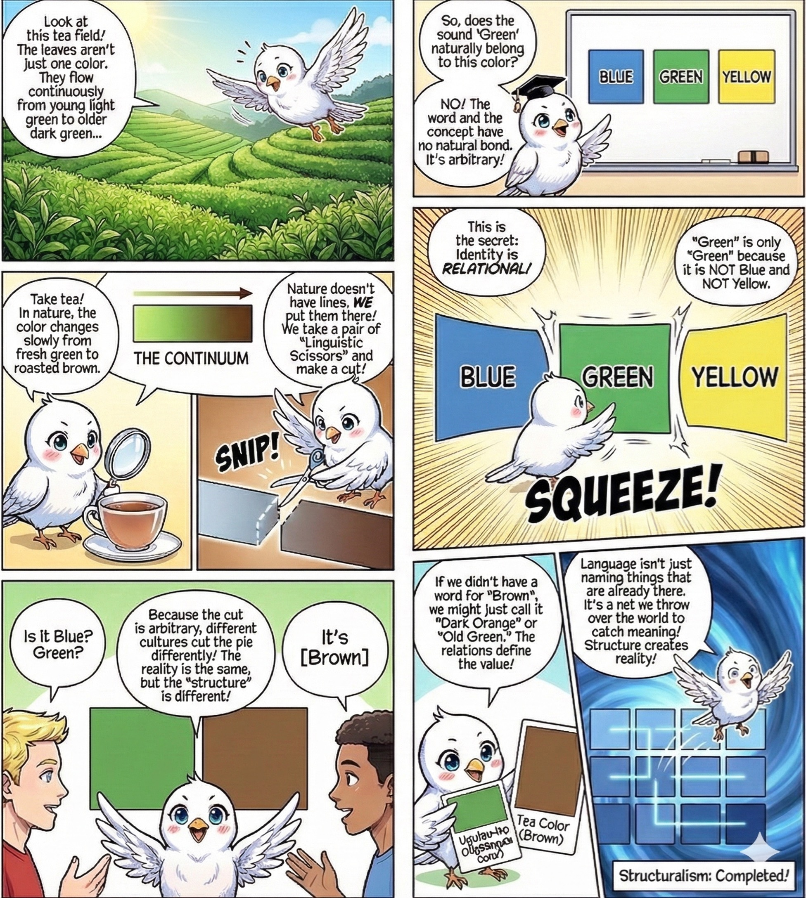
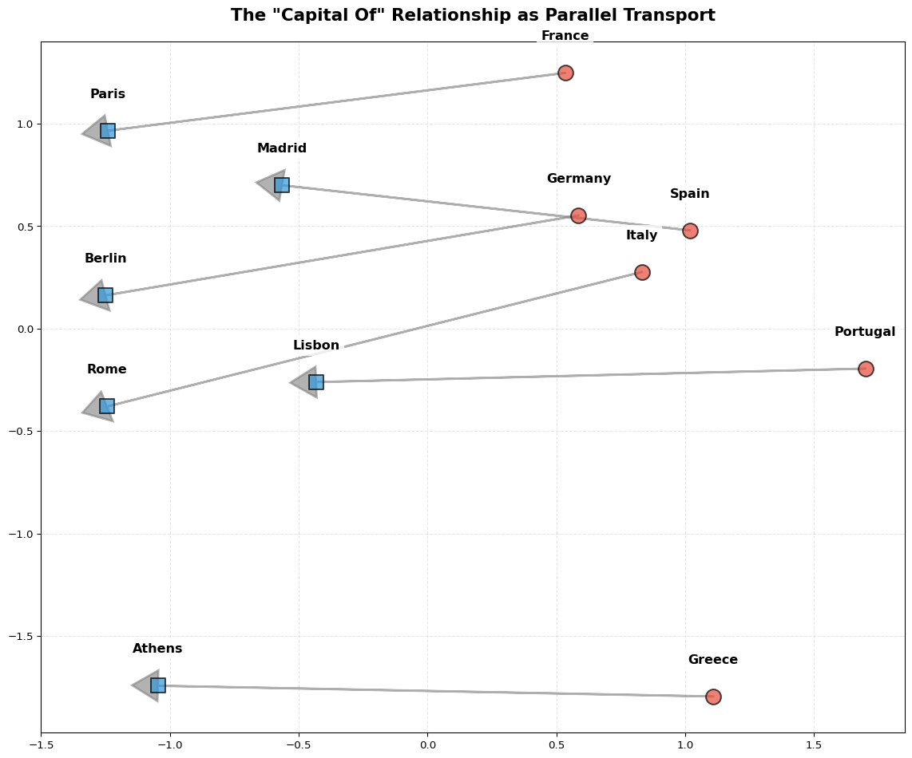
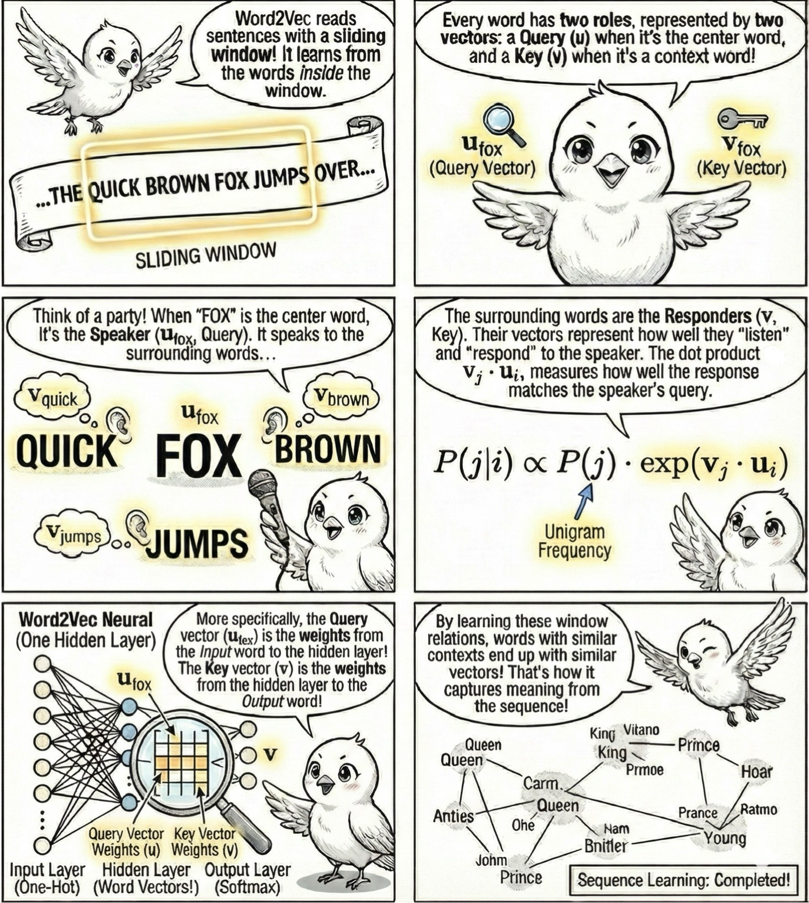
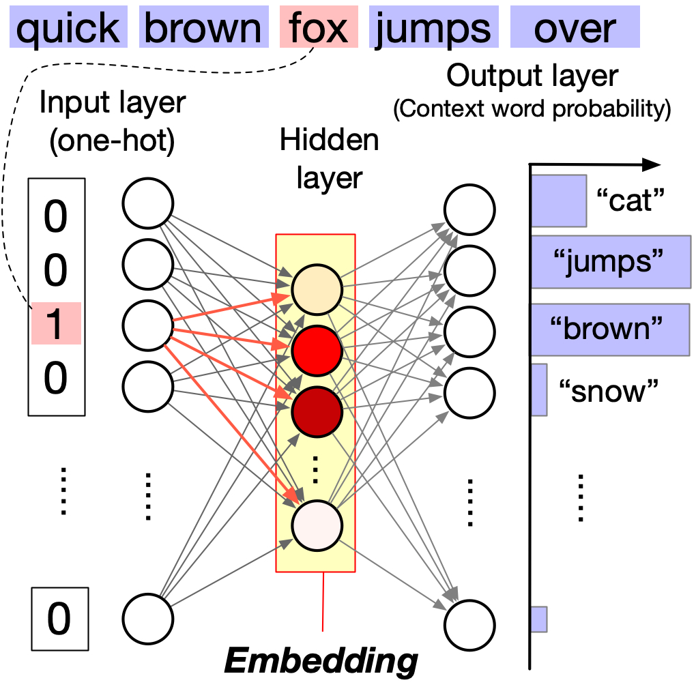
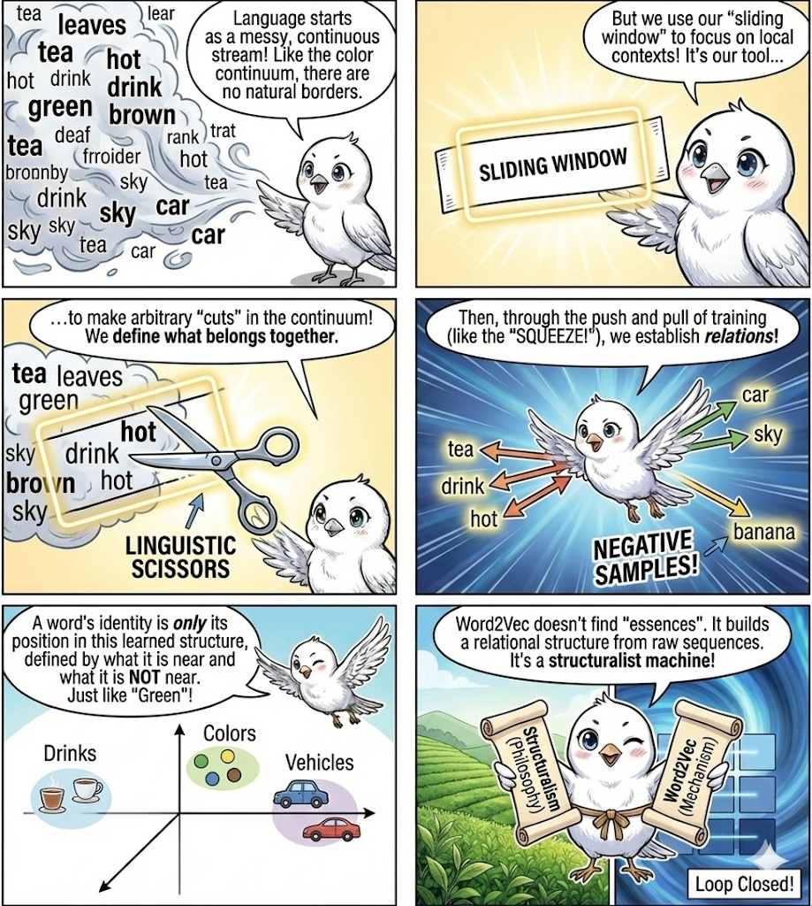

Meaning isn’t stored in words as containers. It emerges from geometric relationships in high-dimensional space. We’ll explore how Word2Vec learns these relationships through contrast, turning linguistic philosophy into runnable algorithms.
Words as Relationships, Not Containers
We intuitively assume words are containers for meaning. “Dog” holds the concept of a canine. This is incorrect. Structural linguistics reveals that a sign is defined solely by its relationships. “Dog” means “dog” only because it is not “cat”, “wolf”, or “log”. Meaning is differential, not intrinsic.

Figure 1: Green is the color that is not non-green (not red, not blue, not yellow, etc.).
Word2Vec, the foundational model grounding modern NLP, learns to map the statistical topology of language. Think of it like mapping a city based purely on traffic data. You don’t know what a “school” is, but you see that “buses” and “children” congregate there at 8 AM. By placing these entities close together on a map, you reconstruct the city’s functional structure. Word2Vec does this for language, turning semantic proximity into geometric distance.
Exploring Word2Vec
Let’s first experience the power of Word2Vec, then understand how it works. We’ll use a pre-trained model trained on 100 billion words of Google News. We aren’t teaching it anything; we’re simply inspecting the map it created.
import gensim.downloader as apiimport numpy as np# Load pre-trained Word2vec embeddingsprint("Loading Word2vec model...")model = api.load("word2vec-google-news-300")print(f"Loaded embeddings for {len(model):,} words.")
Loading Word2vec model...
Loaded embeddings for 3,000,000 words.
If the map is accurate, “dog” should be surrounded by its semantic kin. We query the nearest neighbors in the vector space.
similar_to_dog = model.most_similar("dog", topn=10)print("Words most similar to 'dog':")for word, similarity in similar_to_dog:print(f" {word:20s}{similarity:.3f}")
Words most similar to 'dog':
dogs 0.868
puppy 0.811
pit_bull 0.780
pooch 0.763
cat 0.761
golden_retriever 0.750
German_shepherd 0.747
Rottweiler 0.744
beagle 0.742
pup 0.741
The model groups “dog” with “dogs”, “puppy”, and “pooch” not because it knows biology, but because they are statistically interchangeable in sentences. Since words are vectors, we can perform arithmetic on meaning. The relationship between “King” and “Man” is a vector. If we add that vector to “Woman”, we should arrive at “Queen”.
result = model.most_similar( positive=['king', 'woman'], negative=['man'], topn=5)print("king - man + woman =")for word, similarity in result:print(f" {word:15s}{similarity:.3f}")
king - man + woman =
queen 0.712
monarch 0.619
princess 0.590
crown_prince 0.550
prince 0.538
We cannot see in 300 dimensions, but we can project the space down to 2D using PCA. This reveals consistent structures like the “capital city” relationship that the model has learned.
Code
from sklearn.decomposition import PCAimport matplotlib.pyplot as pltimport pandas as pdcountries = ["Germany", "France", "Italy", "Spain", "Portugal", "Greece"]capitals = ["Berlin", "Paris", "Rome", "Madrid", "Lisbon", "Athens"]# Get embeddingscountry_embeddings = np.array([model[country] for country in countries])capital_embeddings = np.array([model[capital] for capital in capitals])# PCA to 2Dpca = PCA(n_components=2)embeddings = np.vstack([country_embeddings, capital_embeddings])embeddings_pca = pca.fit_transform(embeddings)# Create DataFramedf = pd.DataFrame(embeddings_pca, columns=["PC1", "PC2"])df["Label"] = countries + capitalsdf["Type"] = ["Country"] *len(countries) + ["Capital"] *len(capitals)# Plotfig, ax = plt.subplots(figsize=(12, 10))for idx, row in df.iterrows(): color ="#e74c3c"if row["Type"] =="Country"else"#3498db" marker ="o"if row["Type"] =="Country"else"s" ax.scatter( row["PC1"], row["PC2"], c=color, marker=marker, s=200, edgecolors="black", linewidth=1.5, alpha=0.7, zorder=3, ) ax.text( row["PC1"], row["PC2"] +0.15, row["Label"], fontsize=12, ha="center", va="bottom", fontweight="bold", bbox=dict(facecolor="white", edgecolor="none", alpha=0.8), )# Draw arrowsfor i inrange(len(countries)): country_pos = df.iloc[i][["PC1", "PC2"]].values capital_pos = df.iloc[i +len(countries)][["PC1", "PC2"]].values ax.arrow( country_pos[0], country_pos[1], capital_pos[0] - country_pos[0], capital_pos[1] - country_pos[1], color="gray", alpha=0.6, linewidth=2, head_width=0.15, head_length=0.1, zorder=2, )ax.set_title('The "Capital Of" Relationship as Parallel Transport', fontsize=16, fontweight="bold", pad=20,)ax.grid(alpha=0.3, linestyle="--")plt.tight_layout()plt.show()

The ‘Capital Of’ relationship appears as a consistent direction in vector space.
How Word2Vec Learns Meaning
We intuitively treat words as containers that hold meaning. “Green” contains the visual concept of a specific color. This is incorrect. Nature presents us with a messy, continuous spectrum without hard borders. Language is simply the set of arbitrary cuts we make in that continuum to create order.
Word2Vec operationalizes this by treating meaning as a game of contrast. It functions as a pair of linguistic scissors. It does not learn what a word is by looking up a definition. It learns what a word is like by pulling it close to neighbors, and more importantly, it learns what a word is not by pushing it away from random noise. The meaning of “Green” is simply the geometric region that remains after we have pushed away “Red”, “Purple”, and “Banana”.
Figure 2: Starting from initially random vectors, word2vec learns iteratively to push away the words that are not related and pull words that are related. The resulting vector space is a map of the relationships between words.
This process relies on a technique called contrastive learning. We cannot teach the model the exact meaning of each word, but we can let it learn the relationship between words through a binary classification problem: are these two words neighbors, or are they strangers?
The training loop provides a positive pair from the text, instructing the model to maximize the similarity between their vectors. Simultaneously, it grabs random negative samples (imposters from the vocabulary) and demands the model minimize their similarity. This push-and-pull mechanic creates the vector space. The “Green” cluster forms not because the model understands color, but because those words are statistically interchangeable when opposed to “Red”.
To generate these pairs without human labeling, we employ a sliding window technique. This moves over the raw text corpus, converting a sequence of words into a system of geometric queries.

Figure 3: Without human labeling, word2vec assumes that words in the same context are related. Context is defined as the words within a window of predefined size. For example, in “The quick brown fox jumps over the lazy dog”, the context of “fox” includes “brown”, “jumps”, “over”, and “lazy”.
Word2Vec is a simple neural network with one hidden layer. The input is a one-hot encoded vector of a word, which triggers neurons in the hidden layer to fire. The neural connection strength from the neuron representing the word to the neurons in the hidden layer (marked by red arrows) represents the query vector, u. The hidden layer neurons then trigger the firing of output layer neurons, which represents the probability of word w appearing in the context of word w_i. The connection strength from an output word neuron to the hidden layer neurons represents the key vector, v.

The word in the center of the window acts as the Query vector (u), broadcasting its position to the surrounding Context words, which act as Keys (v). The neural network adjusts its weights to maximize the dot product u \cdot v for these specific context pairs while suppressing the dot product for the negative samples. The probability of a word appearing in context is thus a function of their vector alignment.
where P(j) is the probability of word j appearing in the vocabulary.
The original Word2Vec paper uses a different formulation that omits P(j). This original formulation is correct conceptually but not practically. In practice, word2vec is trained with an efficient but biased training algorithm (negative sampling). The term P(j) enters the P(j \vert i) when we account for bias, which is why we include it here.
This closes the loop between high-level linguistic philosophy and low-level matrix operations. The machine proves the structuralist hypothesis: that meaning is relational. By mechanically slicing the continuum of language and applying the pressure of negative sampling, the model reconstructs a functional map of human concepts. We have successfully turned a philosophy of meaning into a runnable algorithm.

Figure 4
Key Takeaway
You don’t need to know what a thing is to understand it. You only need to know where it stands relative to everything it isn’t. There’s a nice blog post by Chris McCormick that walks through the inner workings of Word2Vec. See here.